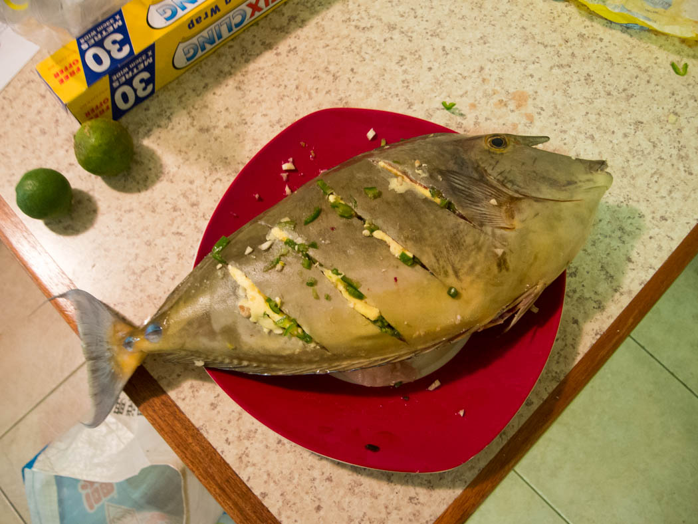
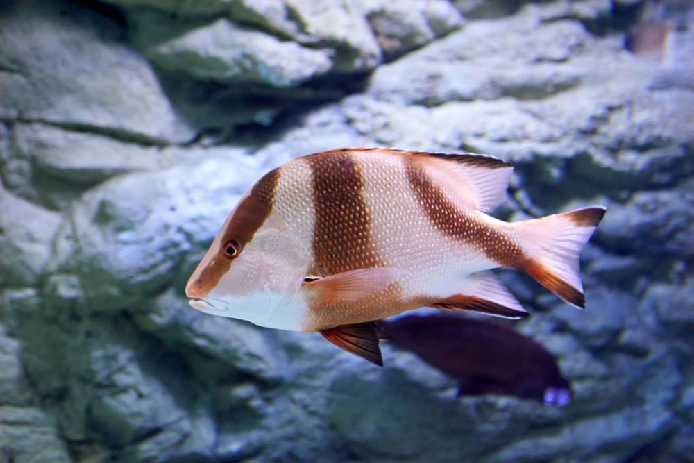

Contact us for deliveries! Below Products are in stock!
Contact Information
-

Email: elijahfaithrenagi@gmail.com

Sand Paper Fish
Sandpaper fish, also known as filefish or leatherjacket, is a type of saltwater fish known for its mild and delicate flavor. The texture of the flesh is somewhat firm and slightly chewy. It's called "sandpaper fish" due to its rough, sandpaper-like skin.
Garnishes:
Sprinkle fresh herbs, like chopped parsley, dill, or chives, over the fish for a burst of freshness and color. Add lemon wedges or citrus zest to enhance the flavor and presentation.
with Marinades:
Marinating the fish before cooking can infuse it with additional flavors. Try marinades with ingredients like soy sauce, ginger, honey, and herbs to create a delicious and aromatic profile.
Ingredients:
Use the freshest sandpaper fish you can find, as it will have the best flavor and texture. If possible, buy it from a reputable fishmonger.
Remember
Remember that sandpaper fish has a unique texture, and its mild flavor pairs well with a variety of ingredients and cooking methods. Feel free to get creative and experiment with different flavors and techniques to create a delicious and satisfying sandpaper fish dish that suits your preferences.

Red Emperor
Red emperor fish, also known as Lutjanus sebae, is a popular and highly-prized fish species found in the warm waters of the Indian and Pacific Oceans. It is a beautiful and delicious fish known for its sweet, delicate flesh and slightly nutty flavor. Red emperor fish is a versatile seafood choice that can be prepared in various ways to bring out its natural flavors. Here's a brief description of the fish and some ways to cook it to be delicious: Appearance: Red emperor fish typically has a vivid red or pinkish color, which deepens with cooking. It features large, elongated bodies with distinct, spiky dorsal fins.
Texture:
flesh of the red emperor fish is firm and moist, with large flakes. It's prized for its succulent and tender texture.
Flavor:
Red emperor fish has a slightly sweet and nutty flavor that is often compared to other premium white fish like snapper and grouper. Its flavor profile makes it an excellent choice for a variety of culinary preparations.
Ways to Cook Red Emperor Fish to Perfection:
Grilling:
Grilling red emperor fish is a fantastic way to bring out its natural flavors. Marinate the fish with a mixture of olive oil, lemon juice, garlic, and herbs. Grill it over medium-high heat, turning once, until the flesh flakes easily. The smoky char from the grill complements the sweet and nutty taste of the fish.
Baking or Roasting:
Baking or roasting red emperor fish with a flavorful seasoning and a drizzle of olive oil is a simple yet delicious method. The gentle, even heat in the oven helps maintain the fish's moisture and tenderness. Consider topping it with sliced tomatoes, fresh herbs, and a squeeze of lemon before baking.